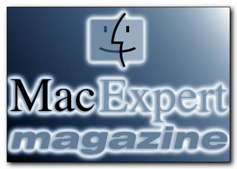

Bienvenue sur le site web de Mac Expert Magazine.
Cliquez sur l'une des icônes à gauche pour accéder aux rubriques.
Flashs d'informations:
Oui, je sais, je n'ai pas mis à jour Mac Expert Magazine depuis plusieurs mois, malgré le soutien que j'ai reçu de la part de nombreux lecteurs. C'est qu'en fait, j'ai été très occupé par le développement de plusieurs projets informatiques...
Mais dès que j'aurai retrouvé un peu de temps, Mac Expert Magazine réapparaîtra.
Présentation du magazine:
Comme vous en doutez sûrement, ce magazine est entièrement consacré à cet engin de rêve qu'est le Mac. Mais ne vous attendez pas pour autant à trouver ici les dernières nouvelles de Copland, de Rhapsody ou encore le dernier test du PowerMac 9600 ou de Word 6...
Mac Expert Magazine ne traite en effet que de l'utilisation du Mac. Il s'adresse aussi bien aux utilisateurs avertis ou programmeurs qu'aux débutants, mais les articles supposent tout de même une connaissance minimale de MacOS.
Ce magazine doit être un lieu d'échange entre utilisateurs. Si vous êtes développeur ou simple utilisateur et que vous souhaitez faire part de vos connaissances, de vos découvertes, n'hésitez pas à m'envoyer un article (sur disquette ou par e-mail SVP!). Il sera publié dans le prochain numéro. Vos impressions, avis, critiques et encouragements sont bien entendu les bienvenues.
Un mot à propos du fondateur:
Mon nom est Pierre-Olivier Latour, j'ai actuellement 18 ans et cela fait bientôt six ans que j'utilise des Macs et plus de deux que je programme en C/C++ sur cette plateforme.
Pour obtenir plus d'informations sur mes activités, mes projets, je vous invite à visiter mon site web personnel.
En fait, j'ai crée Mac Expert Magazine car je pense avoir acquis une bonne connaissance de MacOS (aussi bien dans l'utilisation que dans la programmation) et je souhaiterai que mon expérience puisse servir à d'autres.
Pierre-Olivier Latour.
 Dernière mise à jour le 22 août 1998
Dernière mise à jour le 22 août 1998